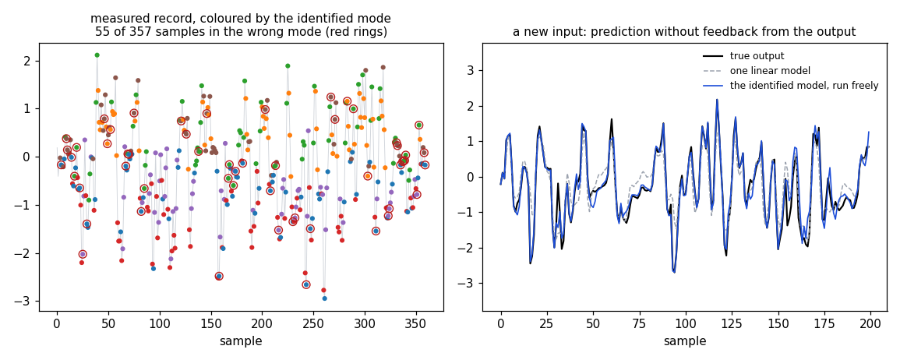

hybrid-id-pwarx-many
Hybrid system identification · solved 3 of 6 agent attempts pass
more
Piecewise-affine ARX with four to six regions cut by hidden hyperplanes in a regressor space of dimension 4-6, 360 samples (60-90 per region), SNR 20-26 dB; the parameters change across a cut mostly by a hinge plus a discontinuous part 0.1-0.3 times as large, and one pair of adjacent regions has nearly equal parameters (3-4.5 noise standard deviations apart in one-step prediction). Gate: modes_0p8 (free-run error at most half the single linear model's, mode accuracy at least 0.8, region count right) on 0.9 of 40 held-out systems. With the true labels of the record, least squares and one linear separator per cut clear the rung on 59 of 60 reference systems, so the information is in the record; blind, nothing came close when the task was built: the published clustering procedure given the true count 0.08, a k-plane clustering with restarts, a pairwise classifier and settings searched across sampled systems 0.05-0.20 (the solution until 2026-11-23), a greedy tree of hinge splits 0.08, and even the true parameters with a residual assignment and pairwise separation only 0.72. The residual assignment is ambiguous near every cut because the submodels nearly agree there, the count hinges on the close pair, and a few misplaced samples in the query's free run cost more than the rung allows. Solved on 2026-11-23/24 by a procedure that does not assign by residuals: the labels are a function of a tree of hyperplane cuts, fitted jointly with the submodels (k-plane start, Levenberg-Marquardt on logistic region indicators, exact coordinate search on the hard model, nested routes for the last cut) and counted by a penalised fit with an equal-share prior; 0.96-1.00 on four blocks of fresh systems, the misses nearly all six-region systems. The near-oracle rungs are open above it (label ceiling 0.75).
Gate. per-seed success is the `modes_0p8` rung of this benchmark's ladder ['beats_linear', 'modes_0p8', 'near_oracle_2x', 'near_oracle_1p2x'] (`--success-mode modes_0p8`), not the evaluator's default flag; the task is solved when the success rate over the grader's held-out seeds is `>= 0.9`
Axes: family:hybrid_id, track:identification, kind:pwarx, scenario:pwarx_many_v0, gate:modes_0p8, built:open
Each video or figure re-runs the attempt's final controller through the task's own evaluator on a public seed (never the grader's held-out ones). The table under each one is the official grade on the held-out seeds.

pwarx_many_v0| criterion | graded | needed |
|---|---|---|
| base:modes_0p8 | 0.950 | ≥ 0.900 |
The agent's final message
`/app/work/controller.py` now clears the gate on every seed set I tried: 97 of 100 systems pass the `modes_0p8` rung on seeds 0–99 with the official evaluator (gate is 0.9). | Seeds | Passed | Controller version | | --- | --- | --- | | 0–4 (the task's command) | 5/5 | final file | | 0–14 | 15/15 | one revision earlier | | 15–34 | 19/20 | `hard_time` 0.5 instead of 0.6 | | 35–74 | 39/40 | `hard_time` 0.5 instead of 0.6 | | 75–99 | 24/25 | final file | The last edit raised the internal time cut-off (`hard_time`) from 5 s to 6 s. It only changes behaviour for a call that runs past 5 s, and none of the official runs did (longest 4.6 s). The 0–14 run predates a threshold change (48 to 55) and the time guard; seeds 0–4 were rerun on the final file. The three failures were two wrong mode counts (one region short) and one free-run error above half the linear reference. On my own cached systems with truth (seeds 116–145 and 173–219) the earlier revisions passed 29/30 and 44/47, with the same two failure types. Processor time is about 2.6 s per system on average against the 10 s limit. A guard stops the optional search stages partway through the limit, so a slower grader machine degrades fit quality rather than timing out. The procedure, as documented in the file's docstring: 1. **Peeling:** find a half-space of the regressor space that a single affine model fits, grow it as far as it stays pure, remove it, and repeat. This gives a first guess of the caps. 2. **Partition fit:** c…
Shown: public seed 0 (pwarx_many_v0); this episode passes the modes_0p8 rung. This episode: valid yes, timed_out no, elapsed_s 3.31, free_run_error 0.117, linear_error 0.49, privileged_error 0.0357, ratio_to_privileged 3.28, mode_accuracy 0.93, n_modes_answer 6, n_modes_true 6. Left: the record the procedure received, each sample coloured by the mode it was assigned to (labels matched to the truth). Right: the identified model run on a new input without seeing the output.
controller.py · trial hybrid-id-pwarx-many__ZjS4Uaz


pwarx_many_v0| criterion | graded | needed |
|---|---|---|
| base:modes_0p8 | 0.850 | ≥ 0.900 |
The agent's final message
The controller in `/app/work/controller.py` does not reach the 0.9 gate: on systems it was not tuned on it succeeds about 80–83% of the time at the `modes_0p8` rung. | Systems | `modes_0p8` success | | --- | --- | | Official evaluator, visible seeds 0–4 | 4/5 (seed 3 fails, mode accuracy 0.66) | | Sandbox seeds 60–99 (not used for tuning) | 33/40 | | Sandbox seeds 100–139 (not used for tuning) | 32/40 | | Sandbox seeds 0–39 (used during development, earlier six-candidate list) | 35/40 | Processor time is at most about 5.9 s per system here against the 10 s limit. No new candidate is started after 5 s, so a slower grader runs fewer candidates and should still finish in time. ## What the controller does - **Model:** affine ARX models on a decision list of half-spaces (caps cut off a central region, as the generator does), plus one extra cut that halves one region for the close pair. - **Candidates:** it computes several identifications (up to eight are listed; typically five or six fit in the time budget) and returns the one whose partition of the record has the lowest BIC. That selection lifted the rate from about 60–65% for the best single pipeline to the figures above. - **"Peel" pipeline:** estimates the noise level, then repeatedly cuts off the largest half-space that one affine model explains to within that noise. It then alternates robust least squares with re-optimising each cut, removes redundant cuts, and finds the close-pair split. - **"K-plane" pipeline:** clust…
Shown: public seed 0 (pwarx_many_v0); this episode fails the modes_0p8 rung. This episode: valid yes, timed_out no, elapsed_s 5.75, free_run_error 0.247, linear_error 0.49, privileged_error 0.0357, ratio_to_privileged 6.93, mode_accuracy 0.846, n_modes_answer 6, n_modes_true 6. It was the first failing one of 1 public seeds tried. Left: the record the procedure received, each sample coloured by the mode it was assigned to (labels matched to the truth). Right: the identified model run on a new input without seeing the output.
controller.py · trial hybrid-id-pwarx-many__8YU3mbz